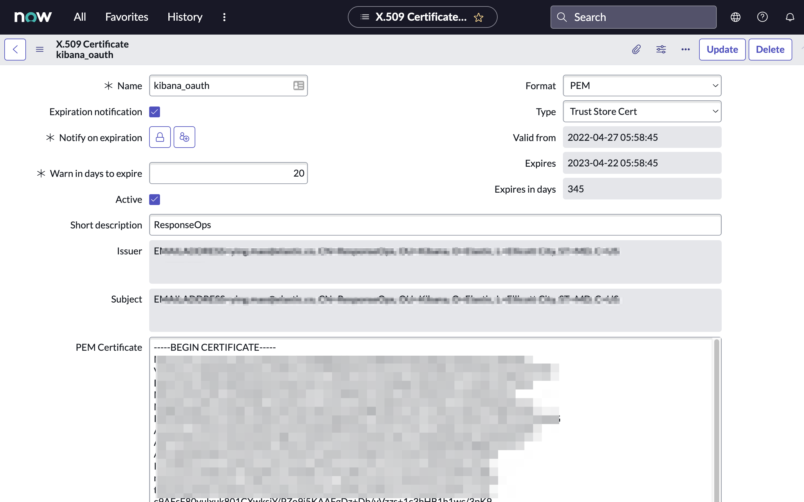
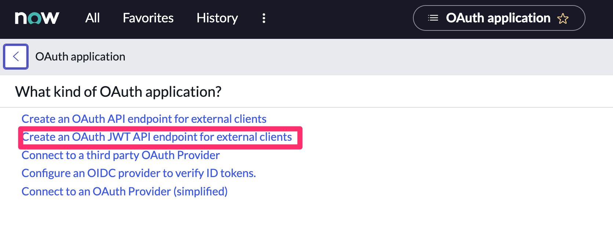
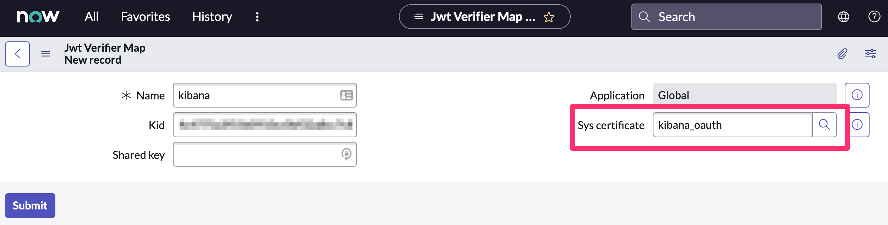

ServiceNow ITOM connector and action
editServiceNow ITOM connector and action
editThe ServiceNow ITOM connector uses the event API to create ServiceNow events. You can use the connector for rule actions.
Create connectors in Kibana
editYou can create connectors in Stack Management > Connectors or as needed when you’re creating a rule. You must choose whether to use OAuth for authentication.

Connector configuration
editServiceNow ITOM connectors have the following configuration properties:
- Client ID
- The client identifier assigned to your OAuth application.
- Client secret
- The client secret assigned to your OAuth application.
- JWT verifier key ID
- The key identifier assigned to the JWT verifier map of your OAuth application.
- Password
- The password for HTTP basic authentication.
- Private key
- The RSA private key that you created for use in ServiceNow.
- Private key password
- The password for the RSA private key. This value is required when you set a password for your private key.
- ServiceNow instance URL
- The full URL for the ServiceNow instance.
- Use OAuth authentication
- By default, basic authentication is used instead of open authorization (OAuth).
- User identifier
-
The identifier to use for OAuth type authentication.
This identifier should be the user field you selected when you created an OAuth JWT API endpoint for external clients in your ServiceNow instance.
For example, if the selected user field is
Email, the user identifier should be the user’s email address. - Username
- The username for HTTP basic authentication.
Test connectors
editYou can test connectors as you’re creating or editing the connector in Kibana. For example:
ServiceNow ITOM actions have the following configuration properties.
- Description
- The details about the event.
- Message key
-
All actions sharing this key are associated with the same ServiceNow alert. The default value is
{{rule.id}}:{{alert.id}}. - Metric name
- The name of the metric.
- Node
- The host that the event was triggered for.
- Resource
- The name of the resource.
- Severity
- The severity of the event.
- Source
- The name of the event source type.
- Source instance
- A specific instance of the source.
- Type
- The type of event.
Refer to ServiceNow documentation for more information about the properties.
Connector networking configuration
editUse the Action configuration settings to customize connector networking configurations, such as proxies, certificates, or TLS settings. You can set configurations that apply to all your connectors or use xpack.actions.customHostSettings to set per-host configurations.
Configure ServiceNow ITOM
editServiceNow offers free Personal Developer Instances, which you can use to test incidents.
Prerequisites
edit- Create a ServiceNow integration user and assign it the appropriate roles.
-
If you use open authorization (OAuth), you must also:
Create a ServiceNow integration user
editTo ensure authenticated communication between Elastic and ServiceNow, create a ServiceNow integration user and assign it the appropriate roles.
- In your ServiceNow instance, go to System Security → Users and Groups → Users.
- Click New.
- Complete the form, then right-click on the menu bar and click Save.
- Go to the Roles tab and click Edit.
-
Assign the integration user the following roles:
-
personalize_choices: Allows the user to retrieve Choice element options, such as Severity. -
evt_mgmt_integration: Enables integration with external event sources by allowing the user to create events.
-
- Click Save.
Create an RSA keypair and add an X.509 Certificate
editThis step is required to use OAuth for authentication between Elastic and ServiceNow.
Create an RSA keypair:
Add an X.509 certificate to ServiceNow:
- In your ServiceNow instance, go to Certificates and select New.
-
Configure the certificate as follows:
- Name: Name the certificate.
- PEM Certificate: Copy the generated public key into this text field.
 - Click Submit to create the certificate.
Create an OAuth JWT API endpoint for external clients with a JWT Verifiers Map
editThis step is required to use OAuth for authentication between Elastic and ServiceNow.
- In your ServiceNow instance, go to Application Registry and select New.
-
Select Create an OAuth JWT API endpoint for external clients from the list of options.
 -
Configure the application as follows:
- Name: Name the application.
- User field: Select the field to use as the user identifier.

Remember the selected user field. You will use this as the User Identifier Value when creating the connector. For example, if you selected Email for User field, you will use the user’s email for the User Identifier Value.
- Click Submit to create the application. You will be redirected to the list of applications.
- Select the application you just created.
- Find the Jwt Verifier Maps tab and click New.
-
Configure the new record as follows:
- Name: Name the JWT Verifier Map.
- Sys certificate: Click the search icon and select the name of the certificate created in the previous step.
 - Click Submit to create the verifier map.
-
Note the Client ID, Client Secret and JWT Key ID. You will need these values to create your ServiceNow connector.